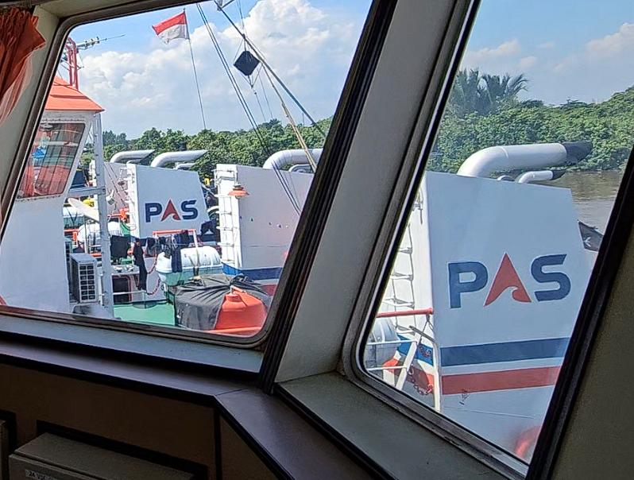

登录
ID
EN
中文
关于我们
组织架构
我们的服务
可持续发展
媒体
招聘
联系我们
推荐链接

推荐链接
推荐网站
公司网站的候选域名及其可用状态。
域名列表
网站域名选项
为公司新网站地址核查可用性的域名。
说明：
此页面为临时页面，用于选择网站域名。
序号
域名
状态
1
primaarmadasamudra.com
可用
2
primaarmada.com
可用
3
primasamudra.com
可用
4
pasindonesia.com
可用
不可用
1
pas.com
不可用